Build report · 2026-11-13
The design file is now a working app in English. It builds a training plan from a conversation, guides each set with a rest timer, keeps a history, and keeps the plan up to date as you train. It runs in the phone's browser and goes on the home screen. No developer mode, no app to install by hand. Both ways of running it are live.
Start here
Open claude.ai/artifact/BGZFQ5nHaNbfV9Qvgw13Ui in Chrome on the phone, signed in to claude.ai. Then the ⋮ menu, "Add to Home screen".
Open dglowinski.github.io/seria/ in Chrome on the phone. Then the ⋮ menu, "Add to Home screen" or "Install app".
Screens
Taken by the smoke test in headless Chrome with a Pixel 7 screen profile. Colours and type come from the design file. Scroll sideways.
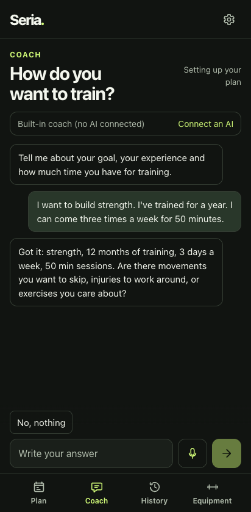
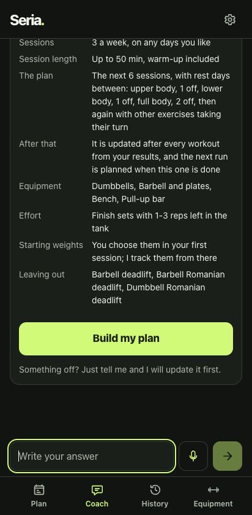
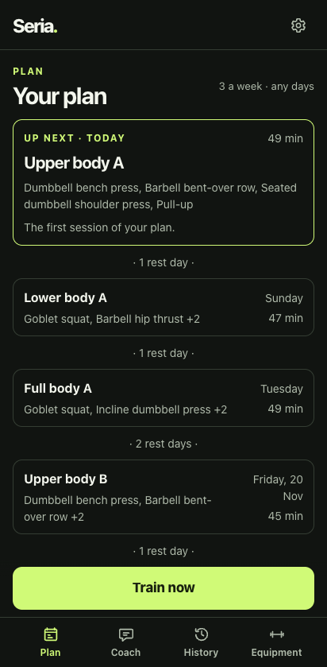
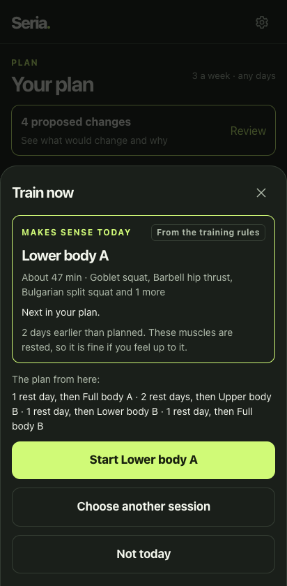
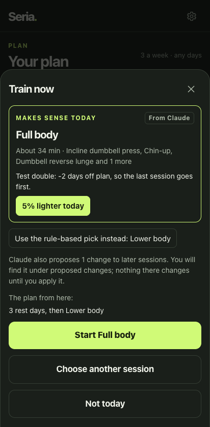
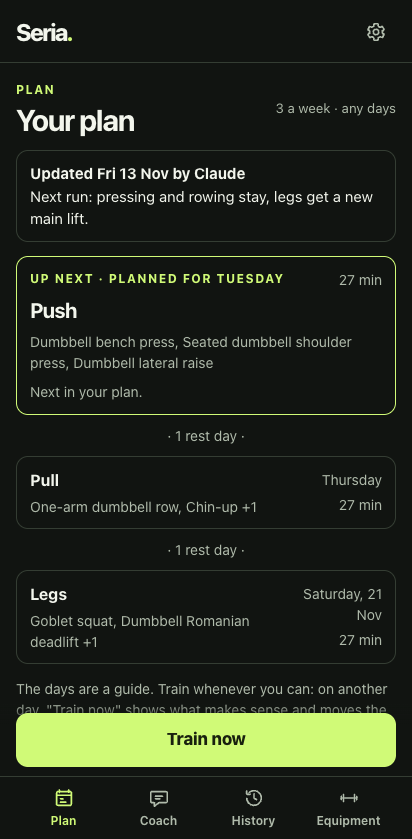
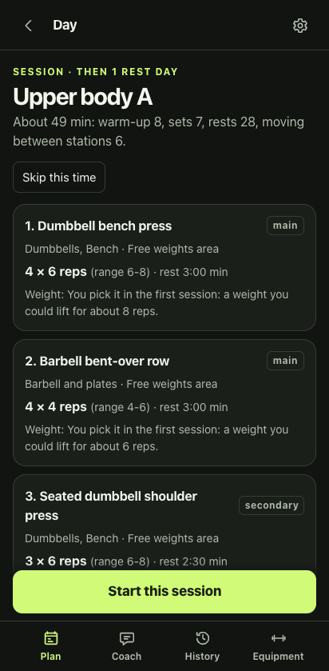
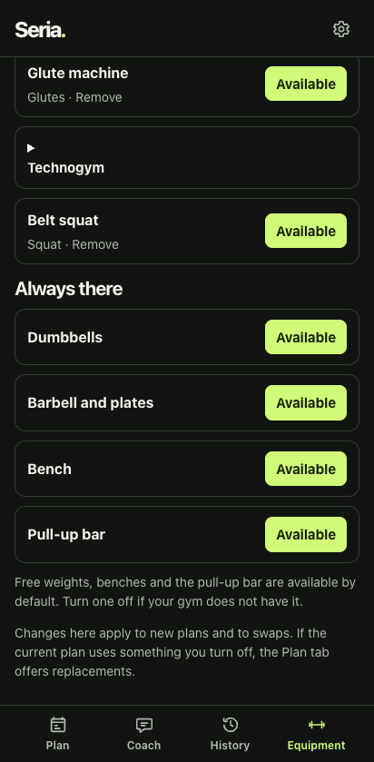
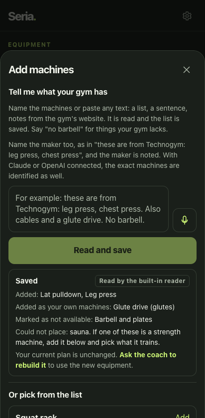
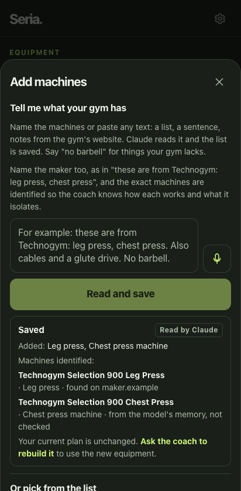
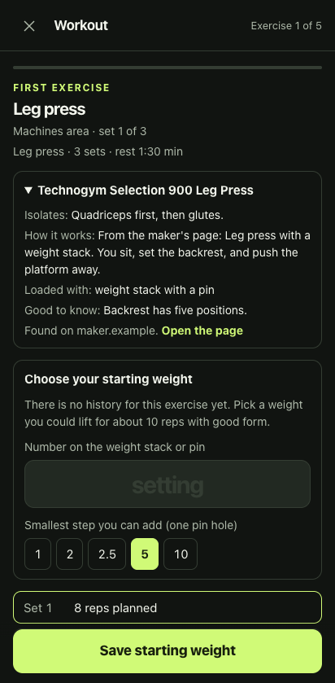
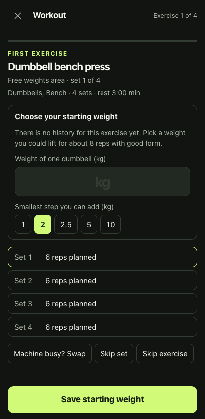
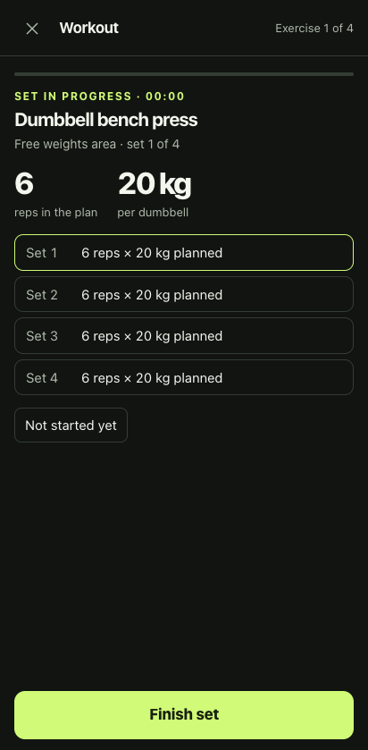
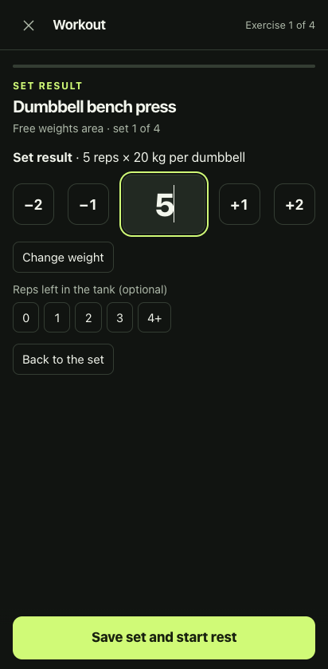
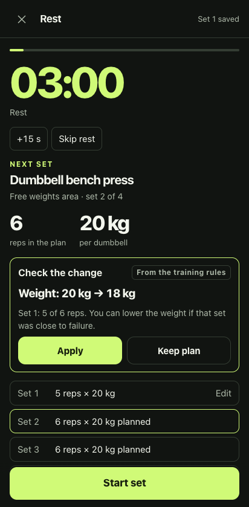
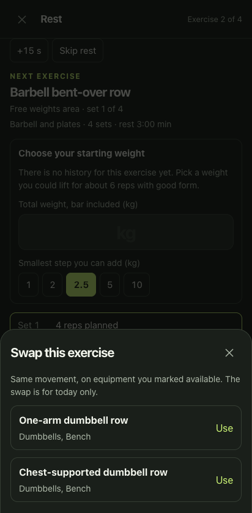
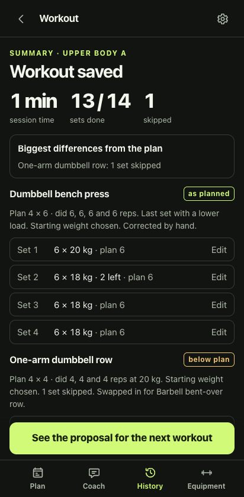
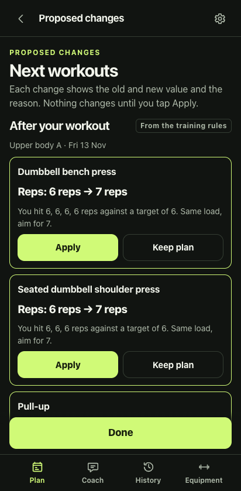
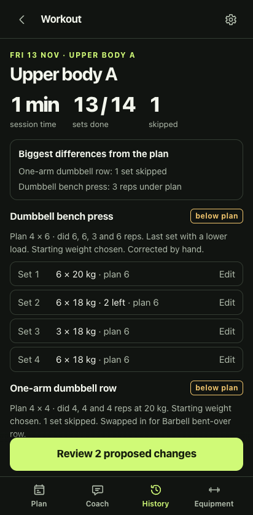
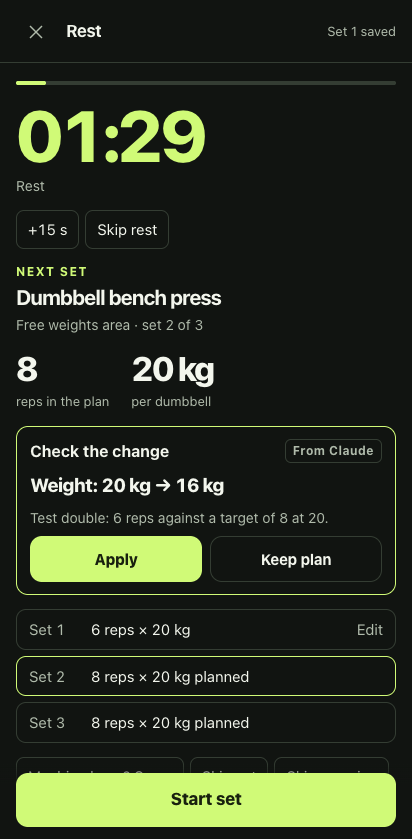
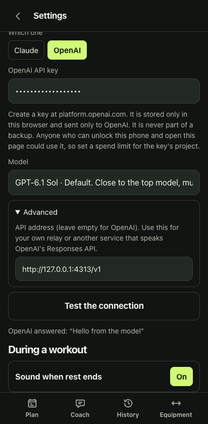
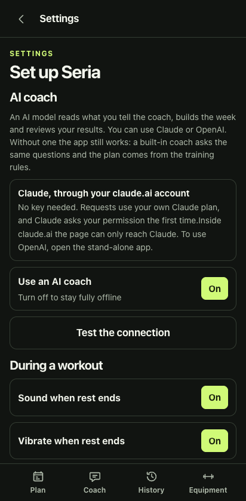
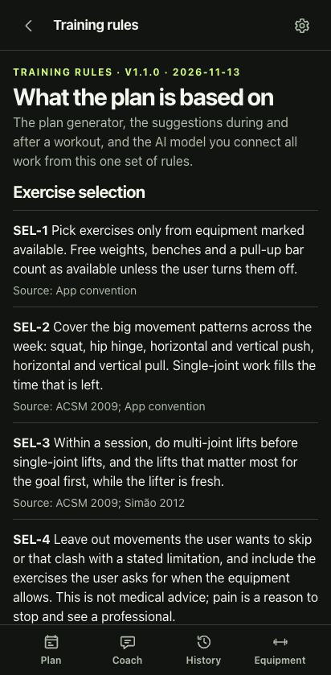
Against the spec
Changed since the first version
AI coach
A model reads what you tell the coach, builds the week, and reviews results during and after a workout. Claude and OpenAI get the same prompt, the same rules and the same answer format, and their answers go through the same checks.
The page asks the viewer's own Claude. Nothing to set up. OpenAI cannot be reached from there.
The official Anthropic SDK, called from the browser with your key. Default claude-opus-5-5; Sonnet 5.5, Haiku 5.5 and Fable 5.2 can be picked.
The official OpenAI SDK and its Responses API, with your key. Default gpt-6.1-sol; Astra, Terra and Luna are listed and any model id can be typed in.
A built-in coach asks the same questions, the plan comes from the training rules, and a built-in reader handles gym descriptions.
Smoke test
Run with npm run smoke. Real app, real Chrome (headless), phone-sized screen, no network and no real API key. Last run 2026-11-13 15:38 UTC.
The built-in coach, the rule-based plan, a full workout with a reload in the middle, history, backup and restore.
The real Anthropic SDK in the browser, talking to a local stand-in for api.anthropic.com. Checks the request the app sends, late and failed answers, and a wrong key.
A stand-in for the runtime claude.ai gives the page: cloud records, Claude, dictation. Includes moving to a fresh browser and getting everything back.
The install files, the icons, and starting the app with the network switched off.
The one-file build that is published on claude.ai, run end to end.
The real OpenAI SDK in the browser, talking to a local stand-in for api.openai.com. The request the app sends, plans, mid-workout and after-workout reviews, model choice, the machine lookup, and a wrong key.
Run against https://dglowinski.github.io/seria/ with npm run check:live, 2026-11-13 15:12 UTC. Real network, then the network switched off.
Plus 38 unit tests (npm test) for the rules, the plan generator, the workout steps, the suggestions, the text reader, the request format and the cloud merge.
Found and fixed
Read this part
Choices
gpt-6.1-sol, the near-top model at about a fifth of the top price. OpenAI's own "start here" pick is GPT-6 Astra; it is one tap away in Settings.Next
Code: github.com/dglowinski/seria, also in ~/seria. Start with README.md. The rules are in docs/training-rules.md. A push to main runs the unit tests and republishes the app.